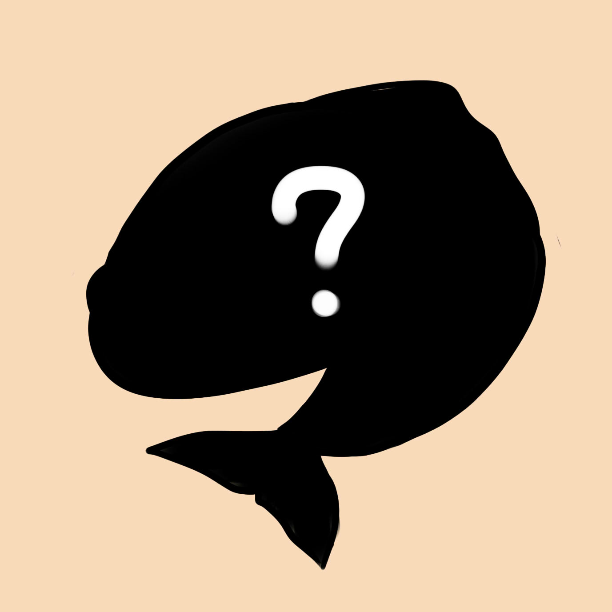
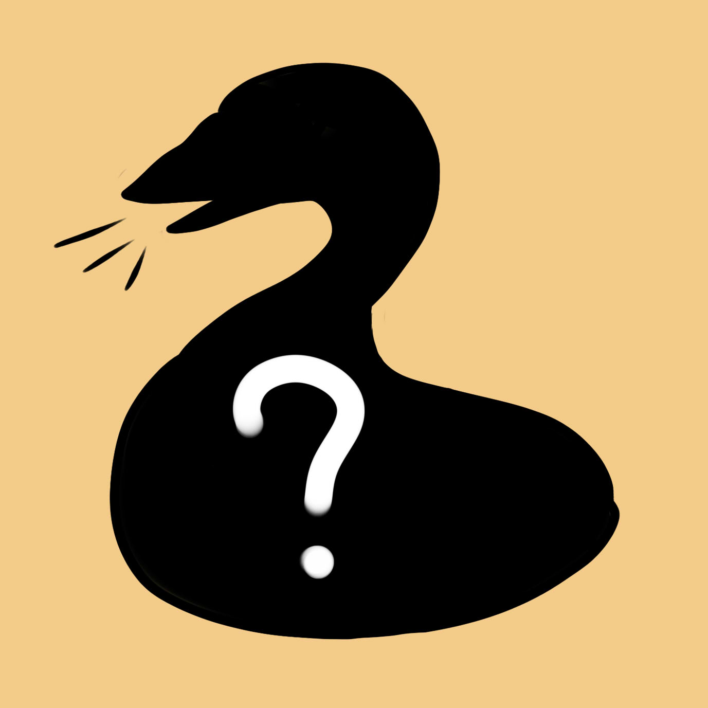
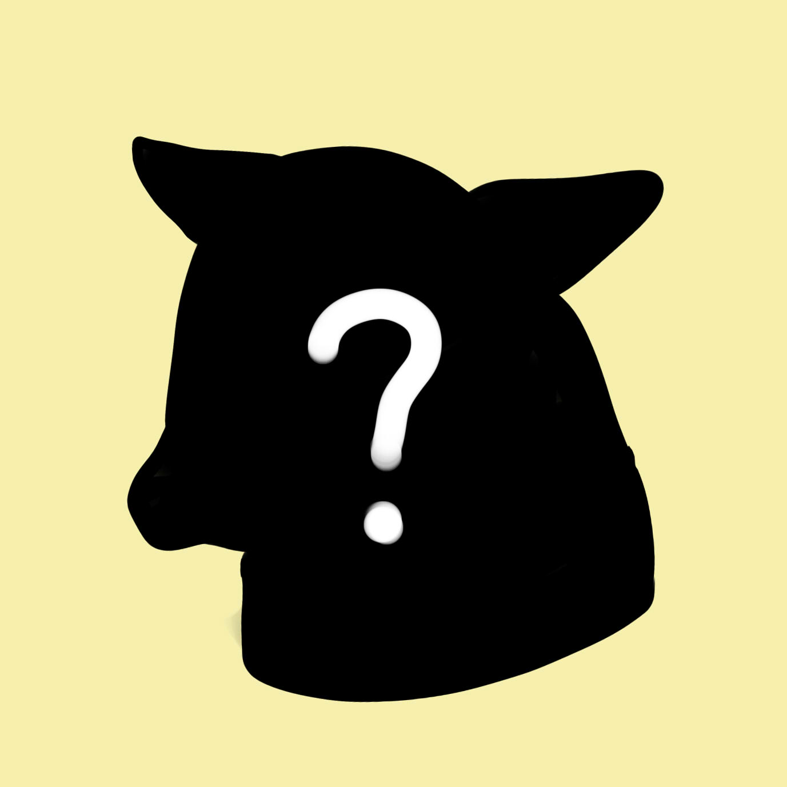
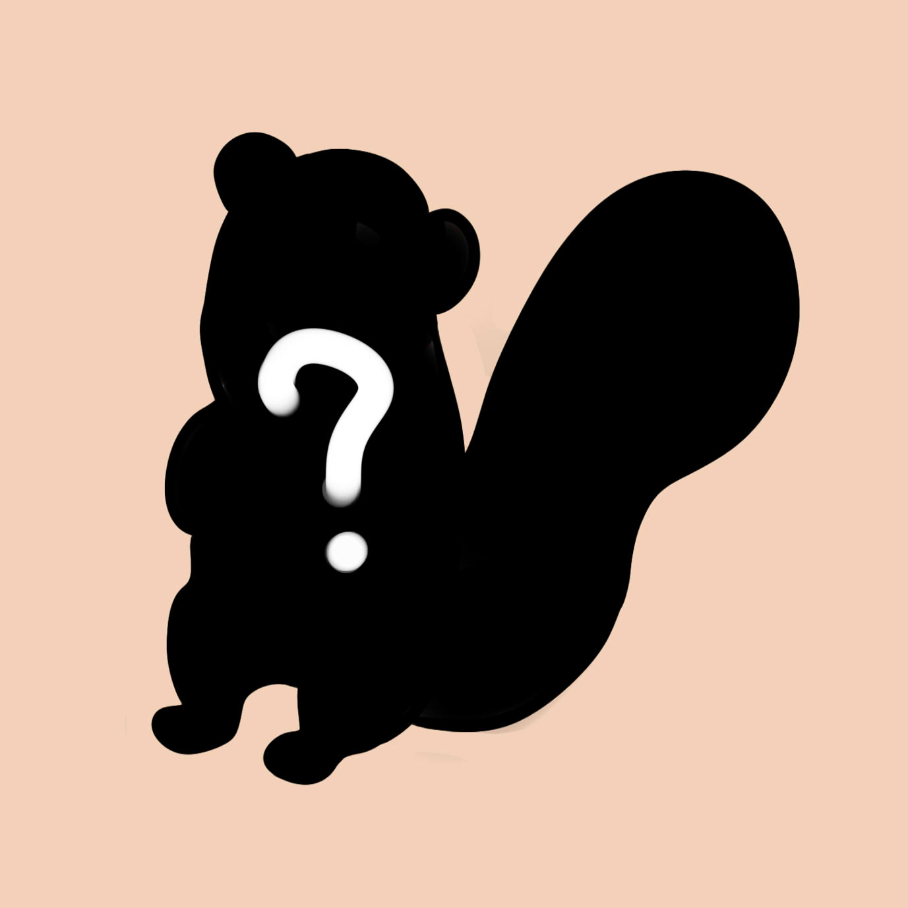
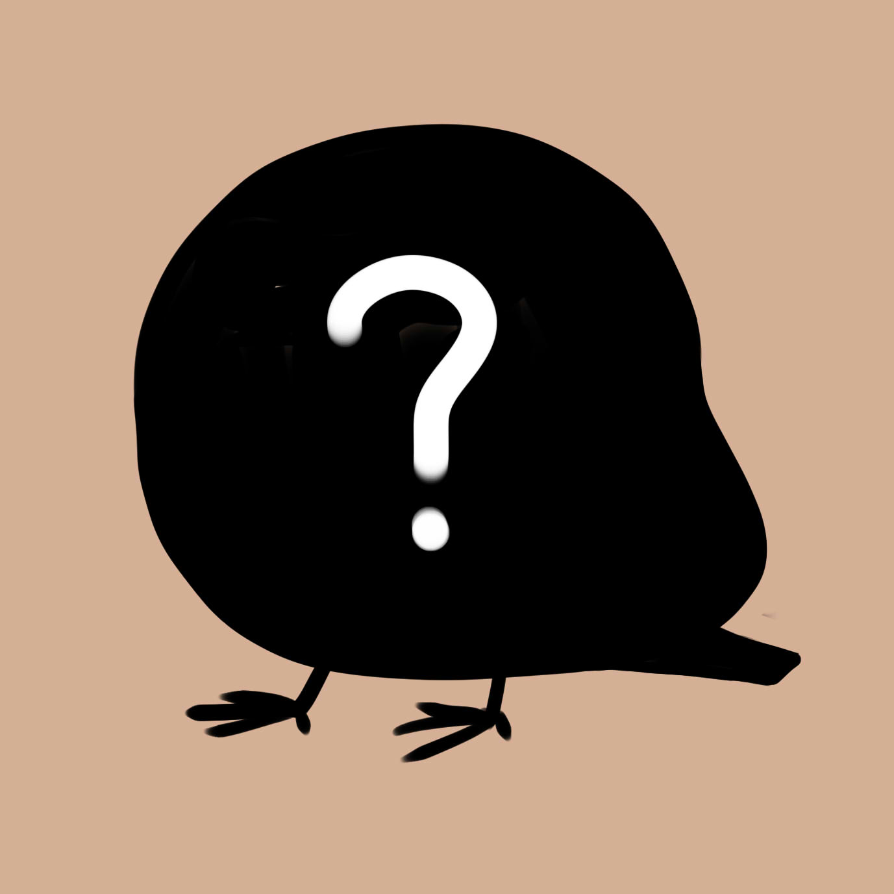
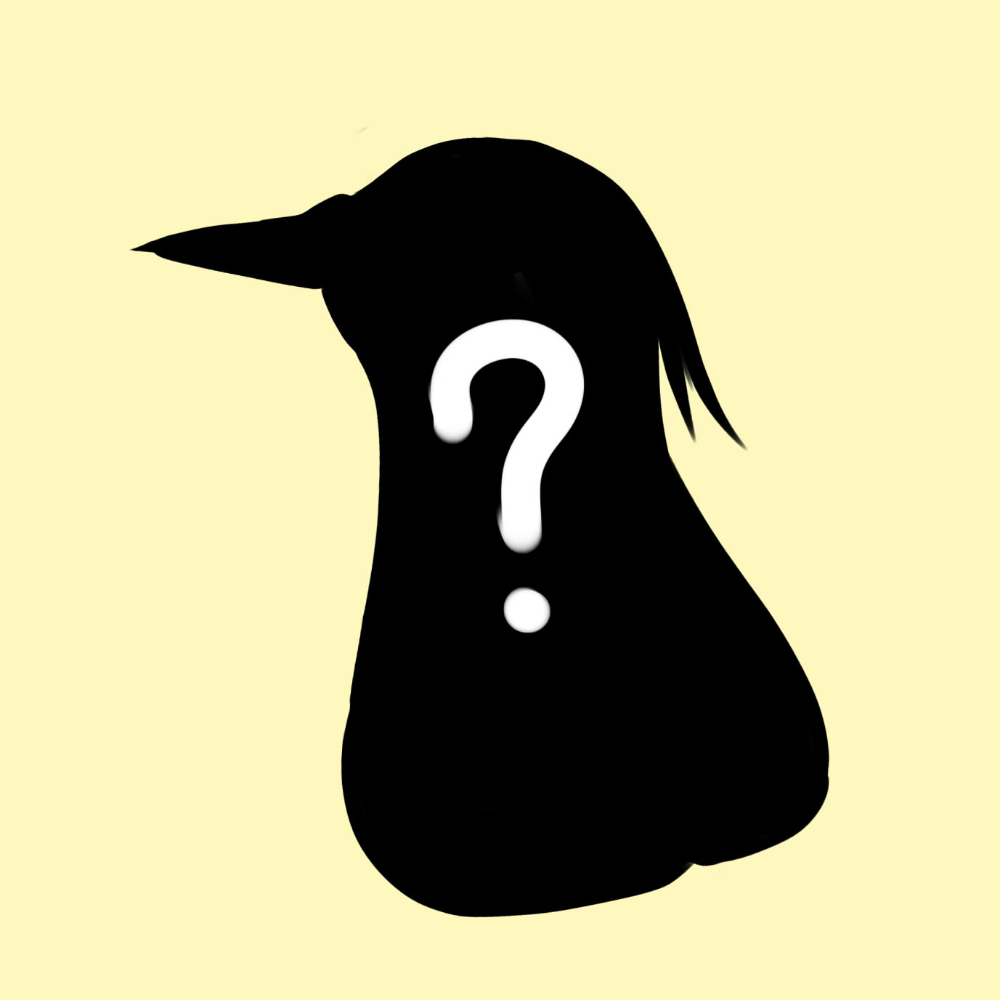

第一題
今天早上下大雨，你會怎麼面對早九的課?
風雨無阻地出門
躺在床上盡情翹課
第二題
肚子有點餓了，你想吃什麼呢?
台大牛奶
鬆餅
肉肉
第三題
你是壯壯柴犬還是哭哭柴犬?
壯壯柴犬
哭哭柴犬
第四題
在平常的下課時間你會選擇…
宅在宿舍
窩圖書館
戶外散步運動
第五題
起床第一件事...
滑手機
刷牙
洗臉
第六題
你自認是?
文科生
理科生
第七題
下面哪個是你最喜歡喝的?
珍珠奶茶
楊枝甘露
肥宅快樂水
第八題
你最喜歡校園哪裡?
醉月湖
總圖
椰林大道
待解鎖
台大還有好多動物，你的朋友會是哪個呢?





